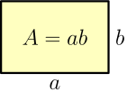
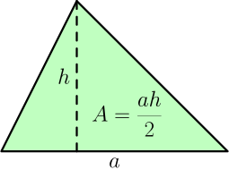
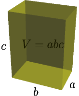
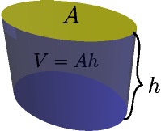

The Basics¶
This chapter contains all kinds of boring basic stuff that you need in rest of this tutorial. If you don't remember everything in this chapter, that's not a problem at all and you can just keep this page open while you read other chapters.
See Also
This cheat sheet is nice and concise, and you might find it easier to find things from than this chapter.
Variables¶
Mathematicians use single-letter variable names because math was originally written on paper by hand and writing long things by hand sucks. There are a few exceptions though; for example, $\sin$ and $\cos$ are functions with 3-letter names. (I don't assume that you know anything else about $\sin$ and $\cos$ yet.) If they would be called $s$ and $c$ instead it would be confusing to have a variable named $s$ or $c$, so they are written a bit more verbosely.
A variable is considered to be a constant if its value doesn't depend on $x$ (or sometimes some other variable we're talking about). For example, $5$ and $-12$ are constants, but $x+1$ is not a constant because $x+1$ gets different values depending on what $x$ is.
Very Basics¶
I'm quite sure you know or you can guess what $a=b$, $a \ne b$, $a>b$, $a \ge b$, $a < b$, $a \le b$ and $a \approx b$ mean so I won't explain those.
In this tutorial, a/b is written as $a/b$ or $\frac a b$, and a*b is
written as $a \cdot b$ or simply $ab$.
Be careful when you have a minus in front of parentheses, e.g. $-(1+2)=-1-2$ and $-(1-2)=-1+2$. So, two minus signs cancel out each other, like $-(-2)=2$. This is because $-x$ means $(-1)$ times $x$, so $-(-2)=(-1)(-2)$ and multiplying two negative numbers together gives a positive number.
If we have something like $a+b+c-b$ we know that's just $a+c$ because we're adding $b$ and then we're taking it away. Later you'll notice that we end up with this $+x-x$ pattern surprisingly often and things become nice and simple. This tutorial denotes using it like this:
$$\begin{align}a\rcancel{+b}+c\rcancel{-b} = a+c\end{align}$$A similar thing happens if you multiply by something and then divide it away.
$$\begin{align}\frac{a\rcancel b}{\rcancel b} = a\end{align}$$When adding things like $a+b-c$, you can put $+a$, $+b$ and $-c$ to any order you want, e.g. like this:
$$\begin{align}a+b-c = a-c+b = -c+a+b\end{align}$$A similar thing works with multiplication and division. Just look at which things are on the top and which things are on the bottom; you can move stuff otherwise however you want:
$$\begin{align}\frac{ab}{c}d \frac e f gh = \frac{abdegh}{cf}\end{align}$$Prefixed minuses can be moved around similarly.
$$\begin{align}\frac{-a}{b} = \frac{(-1)a}{b} = (-1)\frac a b = -\frac a b\end{align}$$More handy stuff:
$$\begin{align}0a &= 0 \\ 1a &= \frac a 1 = a \\ -(a-b) &= b-a \\ (a+b)c &= ac+bc \\ (a-b)c &= ac-bc \\ \frac{a+b}{c} &= \frac a c + \frac b c \\ \frac{a-b}{c} &= \frac a c - \frac b c \\ \frac{\left( \frac a b \right)}{c} &= \frac{a}{bc}\end{align}$$You can use these rules left-to-right or right-to-left. For example, if you want to calculate $(1 + 2) \cdot 3$ you know you could also do $1 \cdot 3 + 2 \cdot 3$, but you can also calculate $1 \cdot 3 + 2 \cdot 3$ like $(1 + 2) \cdot 3$.
Note that there is no $\displaystyle\frac{a}{b+c}=\frac a b + \frac a c$ rule; that doesn't work. This also applies to $\displaystyle\frac{a}{b-c}$.
Dividing the top and bottom by something does not change the value. For example:
$$\begin{align}\frac 6 4 = \frac{6/2}{4/2} = \frac 3 2\end{align}$$$$\begin{align}\frac{x}{ax+bx} = \frac{x}{(a+b)x} = \frac{1}{a+b}\end{align}$$I often denote dividing top and bottom like $\displaystyle\frac{\rcancel x}{(a+b)\rcancel x}$.
If you have a minus sign on top and bottom, you can get rid of it:
$$\begin{align}\frac{-a}{-b} = \frac{\rcancel{(-1)}a}{\rcancel{(-1)}b} = \frac a b\end{align}$$If you have a minus sign on the bottom only, you can move it to top or front because $(-1)(-1)=1$.
$$\begin{align}\frac{a}{-b} = \frac{\rcancel{(-1)}(-1)a}{\rcancel{(-1)}b} = \frac{-a}{b} = \frac{(-1)a}{b} = (-1)\frac a b = -\frac a b\end{align}$$You can also go backwards and multiply top and bottom by something.
$$\begin{align}\frac{1}{a+b} = \frac{x}{(a+b)x}\end{align}$$Here's an easy way to check that these things work using the fact that any number divided by itself is 1:
$$\begin{align}\frac{ac}{bc} = \frac a b \cdot \green{\frac c c} = \frac a b \cdot \green 1 = \frac a b\end{align}$$$$\begin{align}\frac{a/c}{b/c} = \frac{a\cdot\frac1c}{b\cdot\frac1c} = \frac a b \cdot \green{\frac{\ \frac1c\ }{\ \frac1c\ }} = \frac a b \cdot \green 1 = \frac a b\end{align}$$As you can see, sometimes I use colors to make things easier to read.
If you have something like $\frac a b + \frac c d$, you cannot combine it into something like $\frac{a+c}{b+d}$ right away. You can combine stuff only if they have the same bottom, but you can make that happen by multiplying top and bottom nicely:
$$\begin{align}\frac a b + \frac c d = \frac{a\green d}{b\green d} + \frac{\blue b c}{\blue b d} = \frac{ad+bc}{bd}\end{align}$$This also works with $-$ instead of $+$.
If something is below two division lines, then you can move it to top:
$$\begin{align}\frac{a}{\ \frac b c\ } = \frac{a\blue c}{\frac{b}{\rcancel c}\rcancel{\blue c}} = \frac{ac}{b}\end{align}$$Remember that you cannot divide anything by zero. See Numberphile's awesome zero video if you're wondering why.
<laplous3> when you divide by 0 you get theelous3
<laplous3> it's a sort of math black hole
Absolute Value¶
The absolute value of $x$ is $|x|$ in math and something like abs(x) or
Math.abs(x) in most programming languages. It's easiest to think of the
absolute value as stripping off the minus sign. For example, $|2| = 2$ and
$|-3| = 3$.
Powers and Square Root¶
$x^y$ is x**y or pow(x, y) and $\sqrt x$ is sqrt(x) in most
programming languages.
It's easiest to think of $\sqrt x$ as the non-negative number that is $x$ when multiplied with itself. For example, 3 is not negative, so $\sqrt 9 = 3$ because $3 \cdot 3 = 9$. Similarly e.g. $\sqrt 4 = 2$, $\sqrt 1 = 1$ and $\sqrt 0 = 0$.
The $(-x)^2=x^2$ and $\sqrt{x^2}=|x|$ rules probably seem confusing, but an example should make everything clear:
$$\begin{align}(-2)^2 &= (-2)(-2) = -(-(2 \cdot 2)) = 2 \cdot 2 = 2^2 \\ \sqrt{(-2)^2} &= \sqrt{2^2} = \sqrt 4 = 2\end{align}$$This means that $x^2$ is never negative because $x^2$ can be always turned into a positive number multiplied by itself, and that's obviously positive. We have just 1 exception, and that's $0^2 = 0 \cdot 0 = 0$. This also shows that we can't do e.g. $\sqrt{-1}$.
Functions¶
Here's a typical math function:
$$\begin{align}f(x) &= 2x \\ f(6) &= 2 \cdot 6 = 12\end{align}$$There is no special syntax for defining a function. All we have is the equal sign, and when defining a function we just say that its value at x is equal to something.
If you're familiar with a functional programming language like Haskell, then you'll probably realize that the above math looks a lot like this Haskell session:
Prelude> let f x = 2*x
Prelude> f 6
12
Prelude>
If you're feeling like WTF is this, here's a Python session that should make everything clear.
>>> def f(x):
... return 2*x
...
>>> f(6)
12
Quick note about f(x) versus f x: if you define your own function
called $f$ or $g$ you should use $f(x)$, but you can do e.g. $\sin x$ or
$\cos x$ with some "special" functions for historical reasons. This tutorial
uses $\sin(x)$ and $\cos(x)$ everywhere because most programmers are familiar
with that.
Equations¶
For example, if you know that $2x+1 = 9$ you can find $x$ like this:
$$\begin{align}2x+1 &= 9 \\ 2x &= 8 \\ x &= 4\end{align}$$The idea here is that if $2x+1=9$ then $(2x+1)-1=9-1$; that is, $2x=8$. So you can do pretty much anything to both sides of the $=$ and the equality will still work. I started by substracting 1 from both sides and then I divided everything by 2.
Normal limitations apply here; for example, if you have $2x=3x$ and you divide by $x$ you get $2=3$ and it seems like no $x$ can satisfy the equation. However, you cannot divide by $0$ and turns out that $x=0$ is a valid solution because $2 \cdot 0 = 0$ and $3 \cdot 0 = 0$.
You can also apply most functions to both sides. For example, you can do this with $\sqrt{\quad}$:
$$\begin{align}x^2 &= 4 \\ \sqrt{x^2} &= \sqrt 4 \\ |x| &= 2 \\ x=2\ & \text{or}\ x=-2\end{align}$$Proofs and stuff¶
This tutorial contains quite a few exercises that ask you to prove something.
<Zaab1t> if n is even
<Zaab1t> is a**n then equal to a**(n/2) * a**(n/2)
<Akuli> yes
<laplous3> on the surface that seems reasonable, but how do you actually
prove something like that?
<laplous3> <- doesn't have a breeze what's involved in proving something
<laplous3> I mean, I suppose picking arbitrary numbers and showing it
works doesn't cut it right
It's easy to write a program in one's favorite programming language that goes through a big pile of $a$ and $n$ values and makes sure they satisfy $a^n = a^{n/2} \cdot a^{n/2}$, but that is not a proof. What if some funny $a$ and $n$ values break everything? It's very unlikely, but a proof of this must work with any $a$ and $n$ values.
Here's an example proof:
$n$ is even, so $n/2$ is an integer and $a^{n/2}$ means $a$ multiplied by itself $n/2$ times.
$$\begin{align}a^{n/2} \cdot a^{n/2} &= \underbrace{a \cdot a \cdot ... \cdot a}_{n/2\text{ times}} \cdot \underbrace{a \cdot a \cdot ... \cdot a}_{n/2\text{ times}} \\ &= \underbrace{a \cdot a \cdot a \cdot a \cdot a \cdot ... \cdot a}_{n/2\ +\ n/2\text{ times}} \\ &= \underbrace{a \cdot a \cdot a \cdot a \cdot a \cdot ... \cdot a}_{n\text{ times}} \\ &= a^n\end{align}$$There it is. We didn't plug in any values; we just did something that worked for any $a$ and any even $n$. Note that this proof assumes $n > 0$; something like multiplying $a$ by itself -2 times doesn't make much sense. We'll revisit negative exponents later.
Note that it's ok to prove $a^n = a^{n/2} \cdot a^{n/2}$ by starting at $a^{n/2} \cdot a^{n/2}$ and eventually getting to $a^n$. It's just as valid to start with $a^n$ and try to turn that into $a^{n/2} \cdot a^{n/2}$.
Exercise
Prove that $(a+b)c = ac+bc$ if $c$ is a positive integer.
Areas¶
If you are a programmer you'll probably understand areas best as the number of pixels in a shape. For example, if you create a GUI program that creates a 300 by 200 window, it contains $300 \cdot 200 = 60000$ pixels.
The yellow area is simple, but the triangle area is also easy to understand. Let's draw a rectangle around the triangle like this:

Now you can see that the triangle splits both pieces of the rectangle in half, so the triangle area must be half of the rectangle area $ah$.
Volumes¶
A volume is a similar thing as an area, but for 3D things. If our 300 by 200 window was 50 pixels deep, then $300 \cdot 200 \cdot 50 = 3000000$ pixels would fit inside it.
The $V=abc$ thing is actually just a special case of the $V=Ah$ cylinder. The shape of the cylinder's base can be anything, and in the $abc$ thing the base area is $ab$ and the height is $c$.